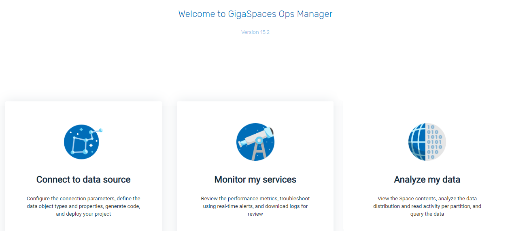

| Author | Product Version | Last Updated | Reference | Download |
|---|---|---|---|---|
| Yoram Weinreb | 15.2 | April 2020 | github |
Kafka is enterprise software that provides a publish/subscribe data communication service. Kafka can be used to indicate the location of output data for a
In order to deploy the
Install Kafka and Kafka Connect
Install GigaSpaces v15.2
git clone the repomvn clean package
lib folder.Schema and type definitions for the data can be expressed via the json file as shown below.
The maven Kafka artifacts in the pom.xml file must match the Kafka version.
If you have developed a GigaSpaces data model, you do not have to provide a json file. Instead, you can provide the generated jar file containing the relevant POJOs.
connect-gigaspaces-sink.properties .
bootstrap.servers=localhost:9092
name=gigaspaces-kafka
connector.class=com.gigaspaces.kafka.connector.GigaspacesSinkConnector
tasks.max=1
topics=Pet,Person
gs.connector.name=gs
# True -- start gs inside the same JVM as connector; False - separate JVM (default)
gs.space.embedded=false
# Name of the target gs Space
gs.space.name=demo
# Location of GS Manager:
gs.space.locator=127.0.0.1:4174
#Choose one of the following -- Jar file or Json file:
gs.model.json.path=<path to gigaspaces kafka connector repo>/example/resources/model.json
#
plugin.path=<path to gigaspaces kafka connector repo>
value.converter=org.apache.kafka.connect.json.JsonConverter
value.converter.schemas.enable=false
key.converter=org.apache.kafka.connect.storage.StringConverter
# Currently the connector does not support Kafka schema.
key.converter.schemas.enable=false
#key.converter.schemas.enable=true
#value.converter.schemas.enable=true
offset.storage.file.filename=/tmp/connect.offsets
# Flush much faster than normal, which is useful for testing/debugging
offset.flush.interval.ms=10000
Following is an example of a
These JSON fields map to the Space Type Descriptor in GS. For more information, see Space type Descriptor in the GigaSpaces documentation center.
[{
"type": "com.gs.Person",
"FixedProperties": {
"firstname": "java.lang.String",
"lastname": "java.lang.String",
"age": "java.lang.Integer",
"num": "java.lang.Integer"
},
"Indexes": {
"compoundIdx": {"type":"EQUAL", "properties": ["firstname", "lastname"], "unique": false},
"ageIdx": {"type":"ORDERED", "properties": ["age"], "unique": false}
},
"Id": {"field":"num", "autogenerate": false},
"RoutingProperty": "firstname"
},
{
"type": "com.gs.Pet",
"FixedProperties": {
"kind": "java.lang.String",
"name": "java.lang.String",
"age": "java.lang.Integer"
},
"Indexes": {
"compoundIdx": {"type":"EQUAL", "properties": ["kind", "name"], "unique": false},
"ageIdx": {"type":"ORDERED", "properties": ["age"], "unique": false}
},
"Id": {"field":"name"},
"RoutingProperty": "name"
}]}]
The steps must be run in the order indicated below.
In this example, we will consume data from a text file using the FileStreamSource source connector.
This connector will publish the lines it reads to the type topics in Kafka.
The example/resources folder.
| Key to Diagram | |
|---|---|
| Consume data from text files based on information in properties files. | |
| FileStreamSource source connector publishes the lines it reads to the type topics in Kafka. | |
| Gigaspaces sink connector reads the data from the topics and stores them in the in-memory grid (the "Space"). | |
gs.sh demoDo not use port 2181.
connect-standalone connect-standalone.properties people-source.properties pet-source.properties connect-gigaspaces-sink.properties
The three connectors properties are found in <path to gigaspaces kafka connector repo>/example/resources.
Ensure that the file parameter in the people-source.properties file and the pet-source.properties file points to the location of the corresponding txt files.
From the Ops Manager screen, choose Analyze my data:

demo Space:
If the Demo Space remains empty and you receive the following message in connector stdout:
INFO: Call put with record count 0
Then proceed as follows:
rm -rf /tmp/connect.offsets (clean the offset file)
This should solve the issue and then you should be able to see the records in the Space and see the following in the sink connectror stdout:
INFO: Call put with record count 11
Pet and Person, and the number of entries for each object: